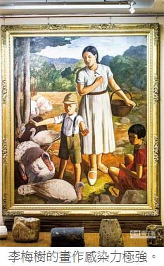

博物館走春 文青獎不完
過年不想到風景區人擠人，就去新北市的博物館逛逛，享受文藝氣息之餘，還能抽大獎！
林金池｜中國時報／旺到報∣2014年1月25日
過年全家走春另類新選擇，新北市文化局為民眾規劃如李梅樹紀念館、陶瓷博物館、三鶯藝術村等21個博物館走春景點，讓過年也有濃濃的文藝氣息！
在這次走春行程中，也可以讓民眾回味一下過年常見的吉祥組合字，只要到新北市博物館家族成員的展館中，尋找各博物館的推薦展品，並在貼有『走馬看發』、『春景常安』、『吉祥如意』、『黃金萬兩』、『日日有見財』、『招財進寶』、『學好孔孟』等合體字展品前拍照，並上傳至活動網頁，留下一句送給親友的祝福語並分享，就能抱走iPad Air、SONY手機等時尚大獎！資訊請上文化局網站http://www.culture.ntpc.gov.tw/查詢，或詳洽各博物館網站。
■三鶯藝術村 生肖陶藝驚豔
你會跳「騎馬舞」嗎？有聽過「馬友友」的音樂會嗎？喜歡吃「馬卡龍」嗎？還是你曾經在周年慶的時候「黑白馬」？這些活潑有趣的陶瓷馬都是學生的作品，快來一趟三鶯藝術村，欣賞「天馬行空－2014全國生肖陶藝競賽展」，一窺他們的創意吧！
■李梅樹紀念館 感懷三峽今昔
李梅樹的一生，除了28至33歲在東京美術學校求學以外，終其一生都深深地與他鍾愛的故鄉--三峽，緊緊相扣。而在其創作最精華的歲月期間以至過世之前，更是將其前半生所吸納的藝術精粹，揮灑展現在三峽祖師廟的建構工程上。
雖然李梅樹大師逝世時工程僅完成三分之二，但其雕樑畫棟、珍貴雕刻、匠師技藝，足以令人讚嘆不已。李梅樹紀念館不但有館內導覽解說，還可針對團體預約需求，並可連結祖師廟、三峽老街旅遊，讓參觀者可深度欣賞藝術之美、並透過畫作對比感受三峽今昔的變化。
「藝術教育不分年齡，尤其越小的孩子對於色彩繽紛的畫作，感受力越強。」「來李梅樹紀念館還有另外一個特色，就是畫中人物會出來跟你講話！」李梅樹紀念館執行長、也是李梅樹的三兒子李景文說，李梅樹畫了許多人物畫，其中更常常以家人及學生入畫，像是「黃昏」這幅史詩般畫作裡，畫面悲壯而沈靜，而其實畫中農婦群象就是李梅樹的女兒們。
■畢卡索陶藝品 壓軸亮相
陶博館過年壓軸大展「火的形與色國際陶藝展－畢卡索、漢斯哈同、曼菲多波西、金恩中、吳炫三聯展」，本展最受矚目展品，當屬畢卡索的33件陶藝作品。你知道畢卡索大師也會製陶嗎？過年就去看看大師的作品！
■鶯歌陶瓷博物館 文創產業發光
曾經，鶯歌的天際佈滿大大小小200多座煙囪，煙囪冒出的煤灰與黑煙將鶯歌的天空染上一層迷茫的灰黑；而日以繼夜生產的陶瓷器皿粗坯，就在大街小巷中曝曬著陰乾，成為街頭最尋常的風景。如今，家家戶戶作陶的景象雖已不復見，但隨著文創產業的發展，鶯歌的土，再度黏回越來越多陶藝工作者的身影，陶博館的開館，更讓鶯歌這個陶瓷重鎮再度散發美麗光芒。
■Index
★李梅樹紀念館／新北市三峽區中華路四十三巷10號／02-2673-2333，http://www.limeishu.org.tw/
★新北市立陶瓷博物館／新北市鶯歌區文化路200號／ 02-8677-2727，http://www.ceramics.ntpc.gov.tw/Index.ycm
★新北市三鶯藝術村／新北市鶯歌區館前路300號／02-8678-2277